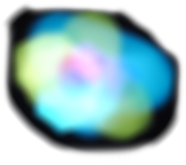
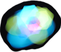
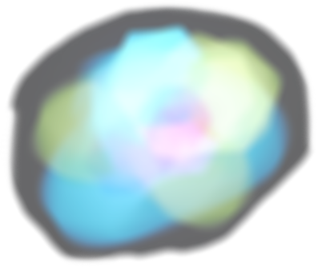
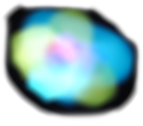
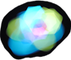
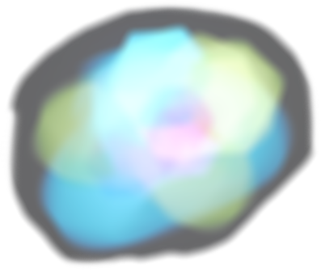

FLYLIGHT
lighting up your trip
lighting up your trip
FLYLIGHT
 





FLYLIGHT starts with an ideaof designing a new look kind of logo.
I used the brief, to explore the media of light painting and designed
a logo for a new travel agancey that highlights the best nightlife
place in Thailand.
During my research I found out the special vision ability of the
butterfly.
The butterfly can actually see ultraviolet colors that it uses for
communication with other butterflies.
This ability links with the compound eyes of the butterfly which
built from littles hexagon lenses.
This got me to design a simple shape of a wing out of hexagons
that will be use later in the logo design.

I desplay the hexagon wing on my iPhone's screen and
it brings light into it.
The wing was shine in a bright neon colors which
represent the ultraviolet range of colors.
I turn off the light in my studio and start moving the
iPhone as the butterfly flaps its wings. Itook photos of
this movements with a long exposure and it comes alive!
A megical world of FLYLIGHTs was created during
the procces of designing FLYLIGHT's logo...
This project flys all the way from Tel-Aviv to Thailand...
As part of a Logo Design course at the Visual Communication department in Shenkar
College of Engineering and Design, I was given a task.
The task ead to design a logo that relates to an airport in Asia, in addition to that I got a
motif to be inspired from - "Bird".
I decided to design a logo and a graphic identity for a travel agancy at the airport which
integrates between Butterfly & Light.
Shenkar combines two main faculties: Design and Engineering.
To benefit the knowledge of both faculties it was decided to cooperate with the
programming course at the Engineering faculty.
Their task was to create a full live website.